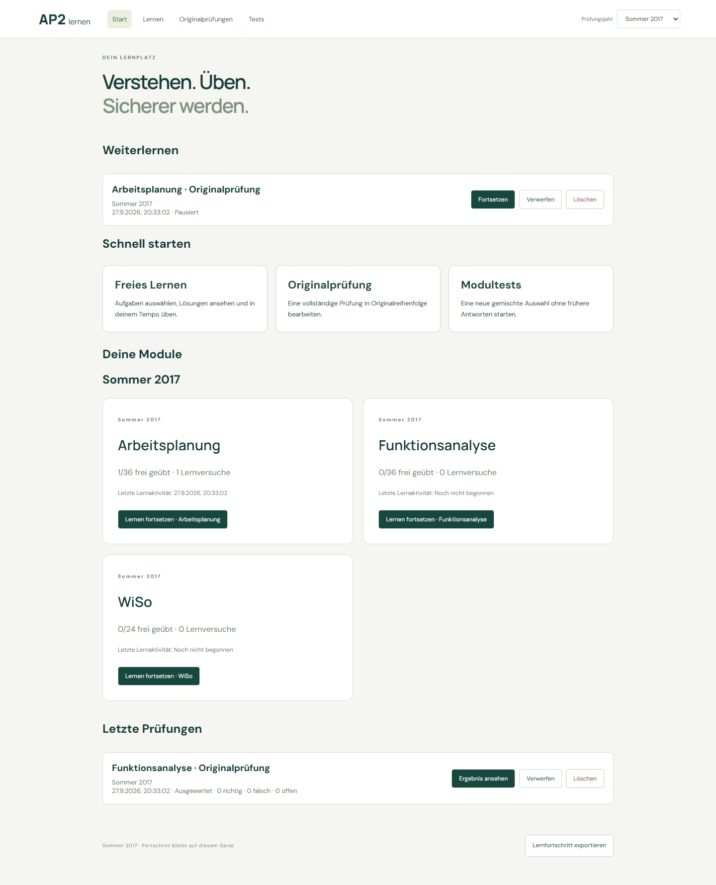
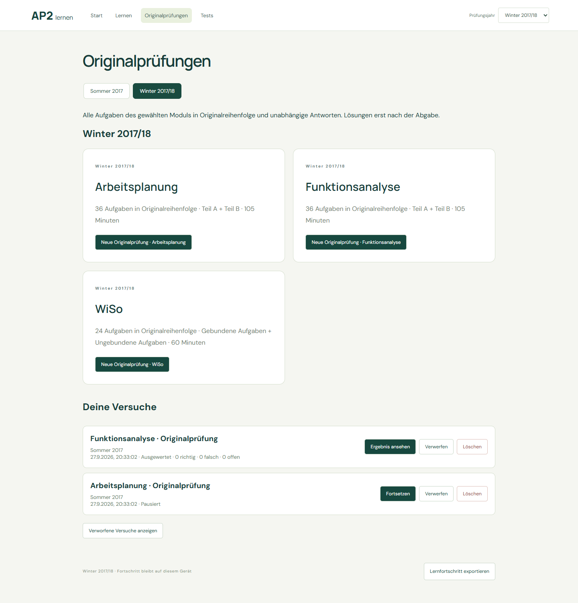
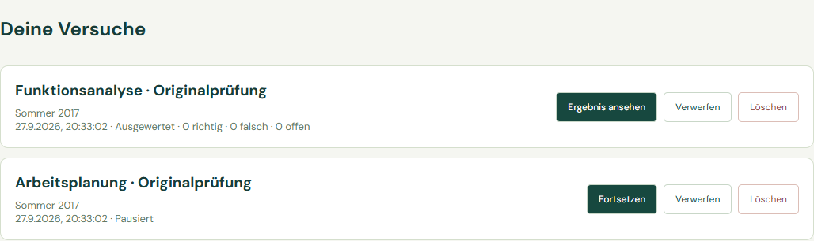

Dropdown und horizontale Jahresnavigation teilen denselben URL-Zustand. Modultests kombinieren weiterhin beide Prüfungsjahre. Datensätze, Antworten, Manifeste und persönliche Speicherlogik sind unverändert.
Browser acceptance result


